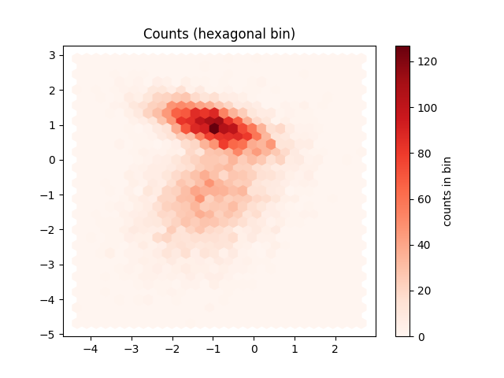
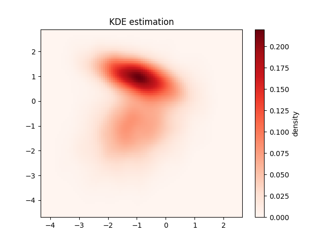

Note
Click here to download the full example code
03. 2D histograms and density plots
This script demonstrates three techniques for visualizing the density of a large 2D dataset, which helps to avoid overplotting in standard scatter plots. It compares:
plt.hist2dfor square binning.
plt.hexbinfor hexagonal binning.A smooth density plot using Kernel Density Estimation (KDE).
See: https://jakevdp.github.io/PythonDataScienceHandbook/04.05-histograms-and-binnings.html
- 
- 
Out:
C:\Users\kelda\Desktop\repositories\github\python-spare-code\main\examples\matplotlib\plot_main03_hist2d.py:86: UserWarning:
FigureCanvasAgg is non-interactive, and thus cannot be shown
16 # Libraries
17 import numpy as np
18 import matplotlib.pyplot as plt
19
20 # Specific library
21 from sklearn.datasets import make_blobs
22 from sklearn.datasets import make_classification
23 from scipy.stats import gaussian_kde
24
25 # ----------------------------
26 # Load data
27 # ----------------------------
28 # Create data
29 mean = [0, 0]
30 cov = [[1, 1], [1, 2]]
31 x, y = np.random.multivariate_normal(mean, cov, 10000).T
32
33 # Create data
34 data, t = make_classification(n_samples=8000, n_features=2,
35 n_informative=2, n_redundant=0, n_repeated=0, n_classes=2,
36 n_clusters_per_class=1, weights=None, flip_y=0.00,
37 class_sep=1.0, hypercube=True, shift=0.0, scale=1.0,
38 shuffle=True, random_state=32)
39 x, y = data[:,0], data[:,1]
40
41
42 # ----------------------------
43 # Visualize
44 # ----------------------------
45 # Plot hist
46 f1 = plt.hist2d(x, y, bins=30, cmap='Reds')
47 cb = plt.colorbar()
48 cb.set_label('counts in bin')
49 plt.title('Counts (square bin)')
50
51 # Plot hex
52 plt.figure()
53 f2 = plt.hexbin(x, y, gridsize=30, cmap='Reds')
54 cb = plt.colorbar()
55 cb.set_label('counts in bin')
56 plt.title('Counts (hexagonal bin)')
57
58 # Plot density
59 data = np.vstack([x, y])
60 kde = gaussian_kde(data)
61
62 # Parameters
63 xmin, xmax = min(x), max(x)
64 ymin, ymax = min(y), max(y)
65
66 # evaluate on a regular grid
67 xgrid = np.linspace(xmin, xmax, 100)
68 ygrid = np.linspace(ymin, ymax, 100)
69 Xgrid, Ygrid = np.meshgrid(xgrid, ygrid)
70 Z = kde.evaluate(np.vstack([
71 Xgrid.ravel(),
72 Ygrid.ravel()
73 ]))
74
75 # Plot the result as an image
76 plt.figure()
77 plt.imshow(Z.reshape(Xgrid.shape),
78 origin='lower', aspect='auto',
79 extent=[xmin, xmax, ymin, ymax],
80 cmap='Reds')
81 cb = plt.colorbar()
82 cb.set_label("density")
83 plt.title("KDE estimation")
84
85 # Show
86 plt.show()
Total running time of the script: ( 0 minutes 4.202 seconds)